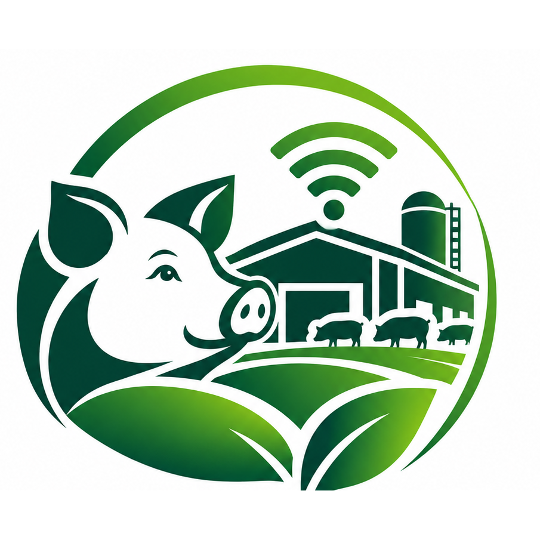

📷Pas de flux vidéo
Caméra — bâtiment 1
Non configuréeVue de la zone d’élevage principale.

Une seule application pour piloter votre élevage · Pointe-Noire, République du Congo
Suivez le cheptel, l’alimentation, les ventes et les tâches de la ferme.
Indicateurs calculés à partir des données enregistrées.
Chiffres provisoires selon les ventes et dépenses saisies.
Le résultat ne tient compte que des ventes et dépenses enregistrées et ne représente pas nécessairement le bénéfice comptable complet.
Consultez les vaccinations, traitements et prochaines échéances.
Téléchargez une copie JSON avant une restauration ou une synchronisation, pour pouvoir revenir à vos données actuelles.
Les rations et comparaisons poids/âge sont des estimations indicatives. Ajustez-les selon la race, l’aliment utilisé, l’état de santé et les conseils d’un vétérinaire ou nutritionniste porcin.
Recherche un porc par identifiant et filtre les fiches par catégorie. Le contrôle des doublons agit uniquement sur les données locales de cet appareil et crée une sauvegarde avant toute correction.
| ID | Catégorie | Sexe | Naissance | Poids | Ration | Fiche |
|---|
Enregistre les vaccinations, traitements, observations et dates de suivi. Les protocoles et doses doivent être confirmés par un vétérinaire local : cette fiche ne prescrit aucun médicament.
| Date | Animal / lot | Type | Intervention | Prochain suivi | Notes | Action |
|---|
Repères indicatifs à adapter à la race, à l’alimentation et aux conditions d’élevage. Ce ne sont pas des normes universelles fixes.
| Catégorie | Repère indicatif | À surveiller |
|---|---|---|
| Porcelet sevré | Environ 0,3–1,2 kg/j, selon poids et stade | Aliment starter complet, transition progressive |
| Porc en croissance (~20–50 kg) | Environ 1,0–2,0 kg/j | Poids, croissance, refus |
| Porc en finition (~50–110 kg) | Environ 2,0–3,2 kg/j | Poids, densité énergétique |
| Verrat adulte | Souvent 2,0–3,0 kg/j | Activité et état corporel |
| Truie en gestation | Souvent 1,8–3,0 kg/j | Éviter maigreur ou surconditionnement |
| Truie allaitante | Souvent 4,0–7,0 kg/j ou plus | Nombre de porcelets, eau et appétit |
Ces valeurs sont des fourchettes générales, pas des normes fixes. Les besoins varient avec la formule alimentaire, la génétique, la température et la conduite d’élevage. Eau propre disponible en permanence.
Une alerte s’affiche ici dès qu’un stock passe sous son seuil. Pour l’alimentation, le seuil proposé est de 5 000 kg. Pour les produits médicaux, définis un seuil adapté à l’unité (boîtes, flacons, doses, etc.).
| Produit | Catégorie | Quantité | Seuil | État | Action |
|---|
Enregistre ici les aliments distribués ou les produits médicaux utilisés : le stock sera diminué automatiquement.
| Date | Animal / lot | Poids | Montant | Action |
|---|
Une tâche est considérée en retard si sa date est antérieure à aujourd’hui et qu’elle n’est pas terminée. Les rappels restent affichés dans cette application locale. La V11 permet aussi de classer les tâches par priorité et de filtrer la liste.
| Date | Tâche | Responsable | Priorité | Statut | Action |
|---|
Registre pour préparer l’organisation de 4 à 10 employés. Pour la sécurité, aucun mot de passe n’est stocké dans ce prototype. Les comptes avec connexion individuelle et droits d’accès nécessiteront un serveur sécurisé.
Les employés actifs apparaissent dans le choix des responsables de tâches. Les tâches restent enregistrées sur cet appareil.
| Nom | Identifiant prévu | Rôle | Téléphone | Statut | Action |
|---|
| Date | Libellé | Montant | Action |
|---|
Préparation de la surveillance à distance de la porcherie.
Cette page ne reçoit pas encore de flux vidéo ni de mesures réelles. Pour les afficher ici, il faudra raccorder les caméras et capteurs compatibles et configurer leur accès.
Vue de la zone d’élevage principale.
Vue de la seconde zone d’élevage.
Aucune mesure reçue. Une valeur ne sera affichée qu’après raccordement du capteur.
Aucune mesure reçue. Les valeurs réelles dépendront du matériel installé.
Aucune mesure disponible tant qu’un capteur n’est pas configuré.
La commande automatisée nécessite un équipement compatible et sécurisé.
Centralise les tâches et prépare les automatismes de la ferme.
Le suivi des rations est disponible. La distribution automatique n’est pas encore raccordée à un automate.
Commande non connectéeUn capteur réel est nécessaire pour mesurer le niveau d’eau et déclencher une alerte fiable.
Capteur non connectéLes alertes de stocks, tâches et suivi sanitaire sont consultables dans l’application. Les notifications en arrière-plan sur téléphone restent à configurer.
Alertes dans l’applicationConfiguration de la ferme, synchronisation et sauvegardes.
La connexion Supabase et les commandes de synchronisation sont regroupées ici pour alléger l’écran d’accueil. L’envoi général reste désactivé afin de protéger les données pendant les tests.
Utilisez uniquement l’URL du projet (sans /rest/v1/) et la clé publique sb_publishable_…. Ne saisissez jamais de clé sb_secret_ ici.
Non connecté. Les données ne sont pas encore synchronisées.
Synchronisation manuelle — Après connexion, commencez par « Charger depuis le serveur » si le serveur contient déjà des données. Protection des données : l’envoi général est temporairement désactivé car il peut supprimer des données sur le serveur. Pour le moment, utilisez uniquement les boutons Santé ci-dessous. Ne remplacez pas ce fichier original avant les tests.
Synchronisation ciblée Santé — Ces boutons ne modifient que la catégorie santé et laissent les autres catégories intactes.
V22 est une copie de travail. V12 et le fichier V21 d’origine ne sont pas modifiés par cette page. Avant tout import ou chargement qui remplace les données locales, créez une sauvegarde JSON.